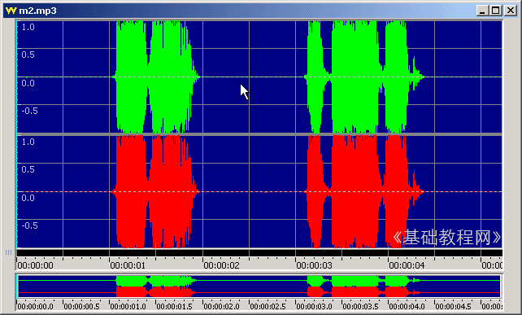

Goldwave 基础入门教程
七、降噪处理 返回
用话筒等录音往往有一定的背景噪音，在GoldWave中有一个降噪命令，可以过滤掉一些噪音，下面我们来看一个练习；
1、启动Goldwave
1）点击桌面上的Goldwave图标，或者在安装文件夹中双击Goldwave图标，就可以运行Goldwave；
2）第一次启动时会出现一个提示，这儿点“是”即可，自动生成一个当前用户的预置文件；
3）顺利进入后出现一个灰色空白窗口，旁边是一个暗红色的控制器窗口，它是用来控制播放的；
2、截取音乐启动Goldwave
1）点击工具栏上的第二个按钮“打开”按钮，在出来的打开对话框中选择一首音乐文件，打开它；
本课images文件夹中有一首 m2 文件，可以用作练习，本地下载；
可以发现在两个音波之间有一些锯齿状的杂音；
2）用鼠标拖动的方法选中开头的那一段杂音，然后点菜单“编辑－复制”命令；
3）点工具栏上的“全选”按钮，选中所有音波，也就是对所有音波进行降噪处理；

4）点菜单“效果－滤波器－降噪..”命令，出来一个面板；

5）在出来的面板左侧，点下边的“剪贴板”，然后点“确定”按钮回到窗口中；
窗口中的波形可以发现，那些锯齿杂音都没了，点右边控制器里的绿色播放按钮，可以听到是很清晰的语音了；

以 m2a 为文件名，保存文件到自己的文件夹；
本节学习了使用Goldwave降噪的基本方法，如果你成功地理解并完成了练习，请继续学习下一课内容；
本教程由86团学校TeliuTe制作|著作权所有
基础教程网：http://teliute.org/
美丽的校园……
|
|
转载和引用本站内容，请保留版权信息和本站链接。